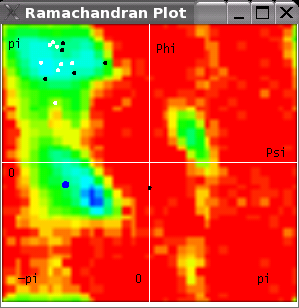

Dihedral Angle
Visualization
ProteinShop
contains a feature to visualize the
distribution of backbone dihedral angles in selected regions of the
current protein. The "Ramachandran Plot Window" shows a
2D scatter plot of the backbone dihedral angles of the selected
secondary structure and all active coil regions, overlayed over a
pre-computed map of the Ramachandran energy calculated for each
possible combination of (phi, psi) dihedral angles, see Figure 1.
The Ramachandran Plot Window can be shown by selecting the "Show
Ramachandran Plot Window" toggle in the Windows Menu.
|
 |
|
Figure 1:Visualization of backbone dihedral angles in the Ramachandran Plot Window. Dihedral angles of the selected secondary structure are shown as white dots; dihedral angles of all active coil regions are shown as black dots; dihedral angles of the selected residue are shown as a large blue dot. Phi angles are mapped on the horizontal axis (from -pi to pi); psi angles are mapped on the vertical axis (from -pi to pi). |
Dihedral Angle Scatter Plot
ProteinShop visualizes backbone dihedral angles by mapping each
residue's phi angle along the scatter plot's horizontal axis, from
-pi to pi (left to right), and each residue's psi angle along the
vertical axis, from -pi to pi (bottom to top). All angles are
measured in radians. The (phi, psi) coordinate frame, with its origin
in the center of the scatter plot, is visualized as a white cross.
The Ramachandran Plot Window only visualizes dihedral angles
of residues contained in either the currently selected secondary
structure or in any of the active coil regions. Dihedral angles from
the currently selected secondary structure are visualized as white
dots;
dihedral angles from the active coil regions are visualized as black
dots, dihedral
angles of the selected residue
are shown as a large white dot.
The
white dot of the selected residue will turn into blue color when
the mouse enters the plot. Dragging the blue dot and moving around
inside
the plot will change the dihedral angles of the selected residue. The
3D
structure of the protein will change accordingly.
Ramachandran
Energy Map
The Ramachandran energy map underneath the
dihedral angle scatter plot is not maintained by ProteinShop, but
loaded from a provided image file at program startup. In the energy
map provided with ProteinShop, energies are visualized as colors
ranging from blue (low energy) to red (high energy).
The used
energy map is stored in an image file in binary PPM format in the
ProteinShop main directory. Users can supply their own energy maps by
replacing the Ramachandran64.ppm file with another color image. The
image must have width and height of a power of two (the image is used
as a texture map), and must be stored in binary (or raw) PPM format
(with exactly one comment line in the PPM header). The definition of
the PPM image file format can be found on the World Wide Web;
alternatively, many commercial and open-source image manipulation
programs, e.g., the Gimp, can write PPM files of the correct format.